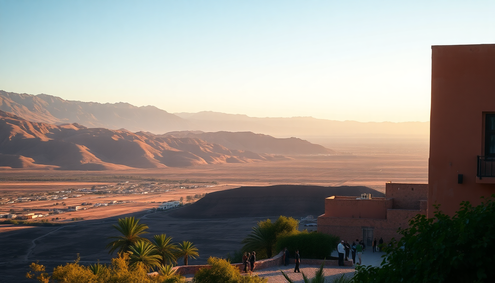

Best Day Trips from Marrakech: Atlas, Essaouira & Ourika

I landed in Marrakech at 11 PM, and by 8 AM the next morning, I was already second-guessing my itinerary. The medina is a sensory overload — brilliant, chaotic, and exhausting. Three days in the city alone felt like a mistake. So I booked a day trip to the Atlas Mountains, then another to Essaouira, and a third to the Ourika Valley. That single decision saved my trip.
Here’s what I learned about getting out of Marrakech without wasting time or money.
Is the Atlas Mountains day trip worth the early start?
Yes, but only if you pick the right route. Most tours leave around 8 AM from Jemaa el-Fna square, and you’ll drive about an hour into the High Atlas foothills. The standard itinerary stops at a berber argan oil cooperative (you’ll see the goats in trees if you’re lucky), then a short hike to a waterfall near Imlil.
I booked through a local guide I found near my riad — paid 250 dirhams per person, which included transport and a tagine lunch. The hike up to Tizi n’Tichka pass viewpoint is steep but manageable in trainers. Bring cash; the tea houses at the top charge 10 dirhams for a glass of mint tea, and it’s worth it for the view.
- Imlil is the main trailhead village — don’t expect solitude, but the terraced fields are photogenic
- Toubkal National Park is technically doable as a day trip, but you’d need to leave by 6 AM and hire a mule for the last stretch
- Ourika Valley is often lumped into Atlas tours, but I’d recommend doing it separately (see below)
- Most guides will push a “berber home visit” for lunch — it’s fine, but the tagine is better at Chez Momo in Imlil
What’s the best way to get to Essaouira for a day trip?
The bus. I took Supratours from the Gare Routière near Bab Doukkala. It cost 80 dirhams each way, takes about 2.5 hours, and drops you right outside the medina walls. The drive is mostly straight highway, but the last 30 minutes along the coast are stunning.
Essaouira is compact — you can walk the entire medina in two hours. The port is the real draw. I ate grilled sardines at a stall near the fishing docks for 15 dirhams. The wind is constant, which is why it’s a kitesurfing hub, but also why the city feels cleaner and cooler than Marrakech.
- Skala du Port is the old fortification with cannons — 50 dirhams entry, worth it for the sea spray
- Place Moulay Hassan is the main square, but skip the touristy cafes and walk two blocks inland for better coffee at Café Mogador
- Hammam Mounia is a local bathhouse near the port — 30 dirhams for a scrub and steam, no frills
- If you’re into surf or kite, Club Mistral runs gear rentals and lessons right on the beach
Should I visit Ourika Valley separately from the Atlas Mountains?
Absolutely. Most operators bundle Ourika with a generic “Atles day trip,” but that means you get 45 minutes at the waterfalls and two hours sitting in traffic. Ourika deserves its own day.
It’s only 45 minutes from Marrakech by taxi — I negotiated 400 dirhams round trip with a driver at the Bab Jdid taxi rank. The valley runs alongside the Oued Ourika river, and the main attraction is the Setti Fatma waterfalls. You’ll climb seven cascades, each higher than the last. The first two are packed with tourists and vendors selling tagines. Go to the third or fourth — the crowds thin out, and you can swim in the cold pools.
- Setti Fatma is the village at the trailhead — lots of restaurants with riverside seating, but I liked Restaurant Chez Ali for the grilled chicken and view
- Jardin de la Vallée is a small botanical garden with endemic plants — 30 dirhams, quiet, good for a break from hiking
- The road up the valley gets narrow after Tnine Ourika — if you drive yourself, watch for donkeys and children
- Best time to go is before 9 AM or after 3 PM to avoid the tour bus crowds
When is the best time of year for these day trips?
I went in early November, and it was ideal. Marrakech was 25°C during the day, the Atlas peaks had a dusting of snow, and Essaouira was breezy but not cold. Summer (June–August) is brutal for the mountains and Ourika — the sun is relentless, and the trails get packed by 10 AM.
- March–May and September–November are the sweet spots for all three trips
- Winter (December–February) can bring snow to the High Atlas passes — some tours cancel if the road to Imlil is icy
- Essaouira is windy year-round, but July and August have the strongest trade winds, which is great for kitesurfers but miserable for lounging on the beach
What should I pack for a day trip from Marrakech?
Layer up. The temperature drops 10–15°C between Marrakech and the Atlas foothills. I wore a light fleece over a t-shirt and was glad I did. For Essaouira, bring a windbreaker — the gusts at the port are no joke.
- Cash — most mountain villages and Ourika stalls don’t take cards
- Sunscreen and a hat — the UV is strong even in winter
- Water — buy a big bottle in Marrakech before you leave; it’s triple the price at Setti Fatma
- Swimsuit — for the river pools in Ourika, and for Essaouira beach if you’re brave enough (the water is cold)
- Comfortable shoes — the Ourika trail is slippery near the waterfalls, and the Atlas paths are rocky
Are guided tours better than going solo?
For the Atlas Mountains, yes — the trails from Imlil are not well marked, and a local guide adds context about berber life. I paid 300 dirhams for a half-day guide through Moroccan Mountain Guides (registered with the tourism office). He showed me a hidden watermill and a family weaving workshop that I would have walked past.
For Essaouira and Ourika, going solo is easy and cheaper. The bus to Essaouira is straightforward, and Ourika is a straight road from Marrakech. I met a couple who hired a private driver through their riad for 600 dirhams — they got the same experience I did for 400.
- Guided tours from Marrakech typically run 500–800 dirhams per person including lunch
- DIY approach costs about 200–400 dirhams per person total (transport + food + entry fees)
- If you’re solo, a guided tour might be worth the social aspect — I saw groups bonding over shared hikes
FAQ
How long does it take to drive from Marrakech to Essaouira? About 2.5 hours by bus or car. The road is good — mostly highway after you leave the city. The Supratours bus runs hourly from Marrakech’s main bus station, and the last return bus leaves Essaouira at 6 PM. If you drive yourself, leave before 8 AM to avoid Marrakech traffic.
Can I visit the Atlas Mountains and Ourika Valley in one day? Technically yes, but I wouldn’t recommend it. You’d spend 4+ hours in the car and only get 30 minutes at each stop. The Ourika Valley is best as a half-day trip with time to hike the waterfalls. Trying to do both feels rushed and exhausting.
What’s the best way to book a day trip from Marrakech? Book through a registered agency in the medina or through your riad. Avoid the touts at Jemaa el-Fna who offer “cheap” tours — they often overcharge for add-ons. I booked my Atlas trip through Plan-It Morocco (a small agency near Bab Doukkala) and had a good experience. For DIY, just grab a grand taxi at the respective taxi ranks.
Conclusion
- Atlas Mountains are worth the early start — go to Imlil, skip the generic cooperative tours, and hire a local guide for the hike
- Essaouira is best done solo via the Supratours bus — eat grilled fish at the port, walk the Skala, and don’t bother with the overpriced square cafes
- Ourika Valley deserves its own day — reach Setti Fatma by 9 AM to avoid crowds, and swim in the upper cascades
- November, March, and April are the best months for all three trips — avoid summer heat and winter snow
- Pack layers, cash, and sunscreen — the microclimates between Marrakech and the mountains are dramatic